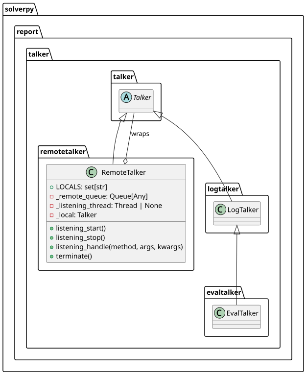

module remotetalker
solverpy.report.talker.remotetalker
RemoteTalker — cross-process talker proxy
Wraps a local Talker and makes its
lifecycle methods callable from a child process. Every public method that is
not listed in LOCALS is intercepted by __getattribute__ and put on a
queue instead of executing directly; a background listening thread in the parent
dequeues each message and calls the real method on the wrapped local talker.
LOCALS names the small set of methods that must execute in the calling
process (queue/thread lifecycle); everything else is forwarded automatically —
no need to enumerate every talker method.
When the RemoteTalker is pickled into a spawn worker only the queue is
needed: _local is excluded from the pickled state so that UI objects (tqdm
bars, etc.) are not serialised unnecessarily.
RemoteTalker
Bases: Talker
Proxy talker that forwards method calls from a child process to the parent.

Any public attribute not listed in LOCALS is intercepted by
__getattribute__ and replaced with a wrapper that puts
(name, args, kwargs) on _remote_queue. The listening thread in the
parent picks up each message and calls the real method on _local.
Methods listed in LOCALS execute directly in the calling process (queue
and thread lifecycle helpers that must not be forwarded).
Source code in packages/solverpy/src/solverpy/report/talker/remotetalker.py
31 32 33 34 35 36 37 38 39 40 41 42 43 44 45 46 47 48 49 50 51 52 53 54 55 56 57 58 59 60 61 62 63 64 65 66 67 68 69 70 71 72 73 74 75 76 77 78 79 80 81 82 83 84 85 86 87 88 89 90 91 92 93 94 95 96 97 98 99 100 101 102 103 104 105 106 107 108 109 110 111 112 113 114 115 116 117 118 119 120 121 122 123 124 125 126 127 128 129 130 131 132 133 134 135 136 137 138 139 140 141 142 143 144 145 146 147 148 149 150 151 152 153 154 155 156 157 158 159 160 161 162 163 164 165 166 167 168 169 170 | |
LOCALS = {'listening_start', 'listening_stop', 'listening_handle', 'eval_launch'}
class-attribute
instance-attribute
Methods that execute locally in the calling process (not forwarded via queue).
__init__(local: Talker, queue: Queue[Any])
Parameters:
| Name | Type | Description | Default |
|---|---|---|---|
local
|
Talker
|
the real talker whose methods are called in the parent process. |
required |
queue
|
Queue[Any]
|
plain |
required |
Source code in packages/solverpy/src/solverpy/report/talker/remotetalker.py
70 71 72 73 74 75 76 77 78 79 80 | |
eval_launch(tasks)
Inject log queue into child's tasks locally, then forward to parent for stats.
Source code in packages/solverpy/src/solverpy/report/talker/remotetalker.py
90 91 92 93 94 95 96 | |
listening_handle(method, args, kwargs)
Call method on the local talker with the given args and kwargs.
Source code in packages/solverpy/src/solverpy/report/talker/remotetalker.py
136 137 138 139 140 141 142 143 144 145 146 147 148 149 150 151 152 153 | |
listening_start()
Start the _remote_queue listening thread.
Source code in packages/solverpy/src/solverpy/report/talker/remotetalker.py
98 99 100 101 102 103 104 105 106 107 108 109 | |
listening_stop()
Signal the listening thread to stop and drain remaining queue items.
Source code in packages/solverpy/src/solverpy/report/talker/remotetalker.py
111 112 113 114 115 116 117 118 119 120 121 122 123 124 125 | |
terminate()
Terminate the local talker (dispatched from child via queue).
Source code in packages/solverpy/src/solverpy/report/talker/remotetalker.py
155 156 157 158 159 | |